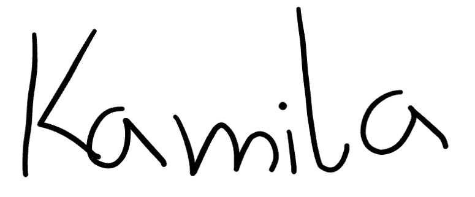
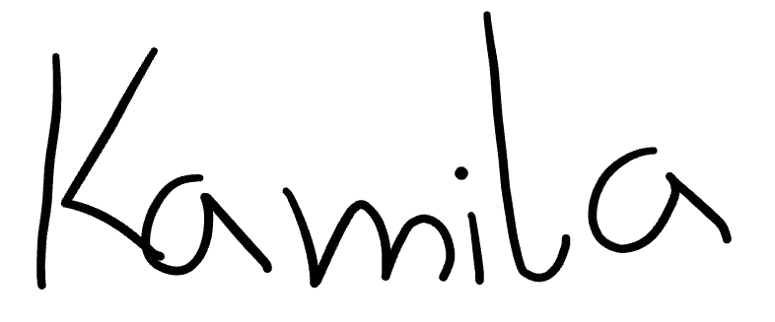
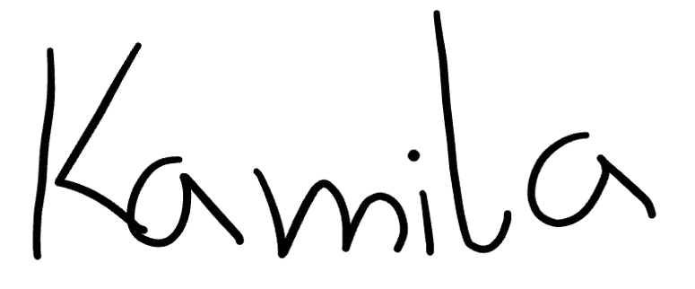

Kochamy Cię całym sercem❤️
 



Przeciągni w górę, aby kontynułować
w ten świąteczny czas chcemy na chwilę się zatrzymać i powiedzieć Ci coś, czego może nie mówimy wystarczająco często na co dzień. Chcemy, żebyś wiedział, jak ogromnie Cię kochamy i jak bardzo jesteśmy wdzięczni za wszystko, kim jesteś i co dla nas robisz. Zawsze dajesz radę. Niezależnie od sytuacji, problemów czy zmęczenia potrafisz stanąć na wysokości zadania. Jesteś osobą, na której zawsze można polegać i która nie poddaje się nawet wtedy, gdy jest trudno. Twoja siła nie zawsze jest głośna ani widoczna na pierwszy rzut oka, ale my ją widzimy. Widzimy ją w Twojej codzienności, w odpowiedzialności, w trosce o nas i w tym, że zawsze starasz się, żeby nam niczego nie brakowało. Wiemy, że nie zawsze jest łatwo i że często dźwigasz na swoich barkach więcej, niż pokazujesz innym.
Rzadko mówisz o zmęczeniu, dlatego tym bardziej chcemy Ci dziś podziękować za Twoją wytrwałość, cierpliwość i za to, że jesteś tak silnym człowiekiem. Dla nas jesteś wzorem, nawet jeśli nie zawsze potrafimy to powiedzieć wprost. Dziękujemy Ci za obecność, za wsparcie i za poczucie bezpieczeństwa, które nam dajesz. Dziękujemy za wszystkie drobne rzeczy, które często umykają, a które budują nasze życie każdego dnia. Za rozmowy, za ciszę wtedy, gdy była potrzebna, za uśmiech i dobre słowo. Chcemy, żebyś wiedział, że bardzo Cię kochamy i że jesteśmy z Ciebie dumni. Może nie mówimy tego codziennie, ale nosimy to w sercach każdego dnia. Jesteś dla nas kimś niezwykle ważnym i niezastąpionym. Życzymy Ci spokoju, zdrowia i prawdziwego odpoczynku. Niech te święta będą pełne ciepła i chwil, w których poczujesz, jak bardzo jesteś kochany i doceniany.

